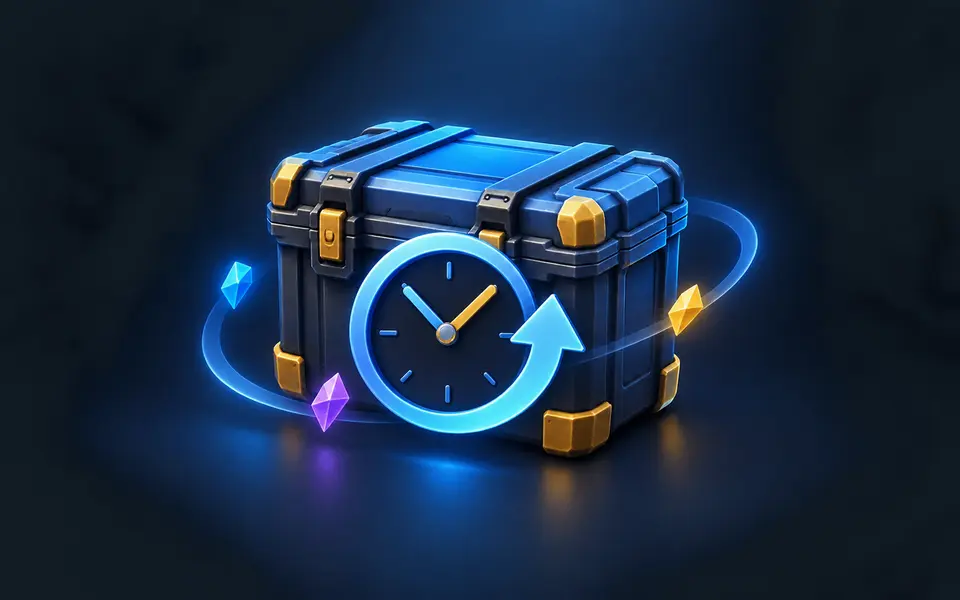

Counter Strike Case & Drop History
Privacy Policy
Last updated: August 21, 2026

In short: Inventory analysis and PNG generation run locally. The extension has no analytics, advertising, telemetry, or developer backend. Optional pricing requests go only to Valve's Steam services after the user starts them.
Counter Strike Case & Drop History is a local, read-only browser extension that analyzes Counter-Strike 2 events shown in the user's Steam Inventory History.
Data the extension accesses
When the user clicks the extension on a supported Steam Inventory History page, the extension reads the case-opening and item-drop information displayed by Steam. This can include item names, case names, dates, rarity, wear, StatTrak status, collection information, and Steam Market identifiers.
The extension does not read, copy, display, or store the user's Steam password or authentication credentials. It does not access unrelated browsing history.
How data is used
Inventory History analysis, totals, sorting, value calculations, and PNG generation are performed locally in the user's browser.
The extension stores the selected currency preference and may cache derived Steam Market reference prices locally in the browser to improve performance. The extension does not create a developer-operated user profile.
Network requests
Price loading is optional and starts only after the user clicks the price-loading button. During this process, exact Steam Market item names are sent to Steam Community and Steam Market endpoints to retrieve official historical and current market reference prices. The browser may use the Steam session already established by the user for these same-site requests. The extension does not read or transmit the user's credentials to the developer.
Official item images used in exported summaries may be downloaded from Steam's official static image hosts without credentials.
The extension also contains an optional support panel. Crypto wallet addresses and QR codes are bundled in the extension and do not require a network request. If the user explicitly clicks Open Ko-fi tip panel, the browser opens Ko-fi's official tip-panel page in a separate compact browser window. Its fixed query parameters control Ko-fi's widget display only. The URL contains no Steam credentials, Inventory History content, scan results, extension-generated identifiers, or extension tracking parameters. Ko-fi and any payment provider selected there, such as PayPal, receive the ordinary connection and payment information needed to operate their own websites under their own privacy policies. The extension does not receive payment details.
Data sharing
No Inventory History data is sent to the extension developer. The extension has no analytics, telemetry, advertisements, developer backend, or third-party price provider. Market item identifiers are shared only with Valve's Steam services when the user requests Steam pricing. Opening Ko-fi is optional, requires a direct user click, and does not transfer scanner data to Ko-fi.
Data retention
The developer does not receive or retain user data through the extension. Local preferences and cached price references remain in the user's browser and can be removed by clearing Steam site data or uninstalling the extension. The extension does not detect, verify, or retain donation activity.
Children's privacy
The extension does not knowingly collect personal information from children or any other users.
Changes to this policy
Material changes will be reflected in an updated policy and, where required, in the extension listing or interface before the changed data practice begins.
Contact
For privacy or support questions, contact cscasehistory@gmail.com.
Trademark notice
This extension is an independent community tool. It is not affiliated with, endorsed by, or sponsored by Valve Corporation. Steam, Counter-Strike, and CS2 are trademarks or registered trademarks of their respective owners.